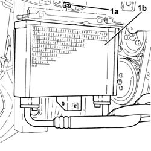
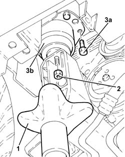
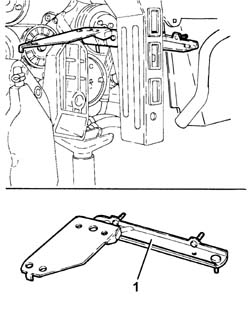
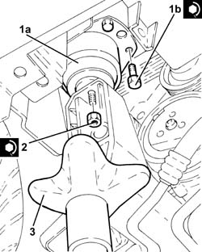
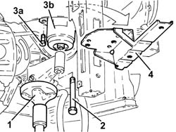
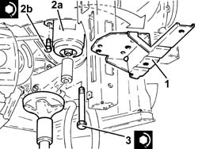

1084C36 Engine oil cooling RADIATOR mounting BRACKET - R.R.
- Path
- Procedures > 10 ENGINE > 1084 ENGINE LUBRICATION SYSTEM > 1084C engine oil cooling circuit > 1084C36 Engine oil cooling RADIATOR mounting BRACKET - R.R.
- Kind
- repair procedure (removal / refitting; the operation number is the code)
- Applies to
- engines: 3.2 V6, 1.9 JTD 16V; all production periods
- Interactive page
- https://sloeber94.github.io/elrnDB-a147/en/#/3024996
Applies to: engines: 3.2 V6; all production periods
 Removing
Removing
 Refitting
RefittingPosition the vehicle on the ramp.
Proceed with removal 7055B54 under-engine guard - r r .
Proceed with removal 7055B64 Engine compartment DUST shield in front wheel arch (one), left or right - R.R. .
Proceed with removal 7055B42 Additional FRONT WHEEL ARCH (one), left or right - R.R. .
Proceed with removal 7210E10 R.R. CENTRE PILLAR .
Proceed with removal 1084C40 Air DUCT for engine oil cooling radiator - R.R . .
1. Undo the nuts (1a) and move the engine oil cooling radiator (1b) without disconnecting the pipes.

Applies to: engines: 3.2 V6; all production periods
1. Position a hydraulic jack under the rigid power unit support, timing side.
2. Undo the nut fixing the timing side rigid engine support to the flexible mounting.
Lower the hydraulic jack as necessary.
3. Undo the bolts (3a) and remove the flexible block for the propulsion unit front support.

Applies to: engines: 3.2 V6; all production periods
1. Keep the engine oil cooling radiator mounting bracket.

Applies to: engines: 3.2 V6; all production periods
Refitting
RemovingPlace the engine oil cooling radiator mounting bracket back in its housing.
1. Place the flexible mounting for the power unit front support (1a) back in its housing and secure it by tightening the bolts (1b) to the recommended torque.
 | Fastening | Component | Ø | Value (daNm) |
|---|---|---|---|---|
1b | Bolt | FRONT RUBBER MOUNTS | M8 | (Bodyshell side) 3.2 ÷ 3.9 |
Place the timing side rigid engine support in contact with the flexible mounting using the hydraulic jack.
2. Tighten the nut securing the timing side rigid engine support to the flexible mounting to the recommended torque.
| Fastening | Component | Ø | Value (daNm) |
|---|---|---|---|---|
2 | Nut | ENGINE MOUNT TIMING SIDE | M10 | (Flexible mounting side) 4.5 ÷ 5.5 |
3. Remove the hydraulic jack.

Applies to: engines: 3.2 V6; all production periods
Place the engine oil cooling radiator back in its housing and fix it using the nuts.
Proceed with refitting 1084C40 Air DUCT for engine oil cooling radiator - R.R . .
Proceed with refitting 7210E10 R.R. CENTRE PILLAR .
Proceed with refitting 7055B42 Additional FRONT WHEEL ARCH (one), left or right - R.R. .
Proceed with refitting 7055B64 Engine compartment DUST shield in front wheel arch (one), left or right - R.R. .
Proceed with refitting 7055B54 under-engine guard - r r .
Remove the car from the ramps.
Applies to: engines: 1.9 JTD 16V; all production periods
Removing
RefittingPosition the vehicle on the ramp.
Proceed with removal 7055B54 under-engine guard - r r .
Proceed with removal 7055B64 Engine compartment DUST shield in front wheel arch (one), left or right - R.R. .
Proceed with removal 7055B42 Additional FRONT WHEEL ARCH (one), left or right - R.R. .
Proceed with removal 7210E10 R.R. CENTRE PILLAR .
Proceed with removal 1084C40 Air DUCT for engine oil cooling radiator - R.R . .
Proceed with removal 1084C34 engine oil cooling radiator - r + r .
1. Position a hydraulic jack under the rigid power unit support, timing side.
2. Undo the bolt securing timing side rigid engine support to the flexible mounting.
Lower the hydraulic jack as necessary.
3. Undo the bolts (3a) and remove the flexible block for the propulsion unit front support.
4. Keep the engine oil cooling radiator mounting bracket.

Applies to: engines: 1.9 JTD 16V; all production periods
Refitting
Removing1. Place the engine oil cooling radiator mounting bracket back in its housing.
2. Place the flexible mounting for the power unit front support (2a) back in its housing and secure it by tightening the bolts (2b) to the recommended torque.
| Fastening | Component | Ø | Value (daNm) |
|---|---|---|---|---|
2b | Bolt | FRONT RUBBER MOUNTS | M8 | (Bodyshell side) 3.2 ÷ 3.9 |
Place the timing side rigid engine support in contact with the flexible mounting using the hydraulic jack.
3. Tighten the bolt securing timing side rigid engine support to the flexible mounting to the recommended torque.
| Fastening | Component | Ø | Value (daNm) |
|---|---|---|---|---|
3 | Bolt | ENGINE MOUNT TIMING SIDE | M12 | (Flexible mounting side) 7.9 ÷ 9.7 |
Remove the hydraulic jack.

Applies to: engines: 1.9 JTD 16V; all production periods
Proceed with refitting 1084C34 engine oil cooling radiator - r + r .
Proceed with refitting 1084C40 Air DUCT for engine oil cooling radiator - R.R . .
Proceed with refitting 7210E10 R.R. CENTRE PILLAR .
Proceed with refitting 7055B42 Additional FRONT WHEEL ARCH (one), left or right - R.R. .
Proceed with refitting 7055B64 Engine compartment DUST shield in front wheel arch (one), left or right - R.R. .
Proceed with refitting 7055B54 under-engine guard - r r .
Refill the engine oil lubrication system 0010T11 engine oil check level and top up .
Remove the car from the ramps.
Topics linked from this page (7)
- 0010T11 engine oil check level and top up
- 1084C34 engine oil cooling radiator - r + r
- 1084C40 Air DUCT for engine oil cooling radiator - R.R .
- 7055B42 Additional FRONT WHEEL ARCH (one), left or right - R.R.
- 7055B54 under-engine guard - r r
- 7055B64 Engine compartment DUST shield in front wheel arch (one), left or right - R.R.
- 7210E10 R.R. CENTRE PILLAR